안녕하세요 :)
아침마다 눈썹 그리는 데 십 분씩 쓰는 게 지겨워서, 이번에 청주 눈썹문신 알아보다가 벨르뮤에서 자연결로 받았어요.
제가 원한 건 딱 하나였어요.
진하게 채운 눈썹은 예전에 한 번 후회한 적이 있어서요. 그래서 상담 사진을 제일 오래 봤고, 앞머리 표현이 한 올씩 살아 있는 곳을 찾다가 여기로 결정했습니다.
청주 시내에서 차로 십 분 거리라 찾아가기 편했어요. 문 앞에 실내화가 준비되어 있고, 들어가면 바로 로고월이 보입니다. 반영구만 하는 곳이 아니라 네일·속눈썹까지 같이 하는 구조라 내부가 꽤 넓어요.
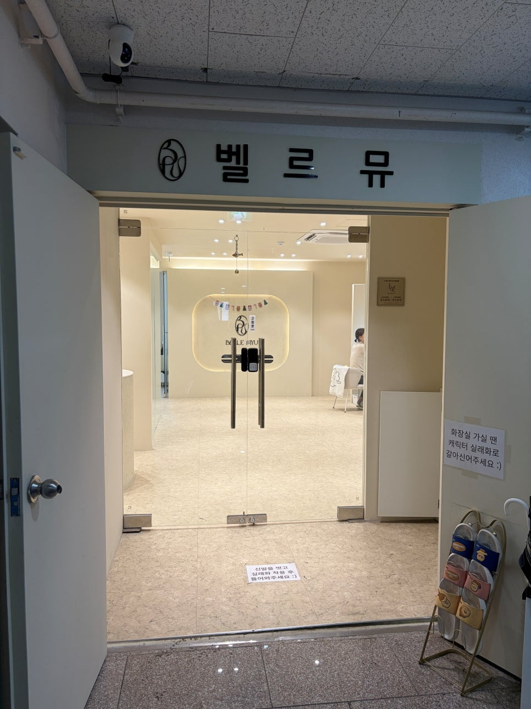
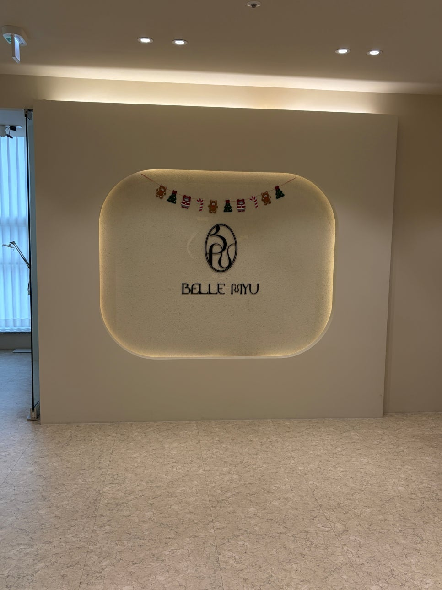
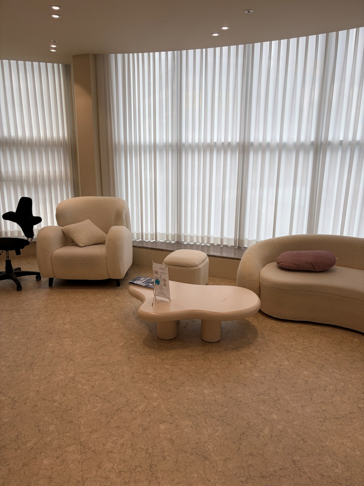
바로 눕히지 않고 거울 앞에 앉아서 한참 얘기했어요. 평소 눈썹을 어디까지 그리는지, 화장할 때랑 안 할 때 어떤 게 더 신경 쓰이는지 물어보시고, 제 눈썹 결이 자란 방향이랑 좌우 높이 차이를 짚어주셨습니다.
상담 받다 보니 왜 붉게 변하고 짝짝이가 되는지도 설명을 들었는데, 결국 색소 배합과 디자인 순서 문제라고 하셨어요. 복도에 세워진 안내판에 그 내용이 정리돼 있습니다.
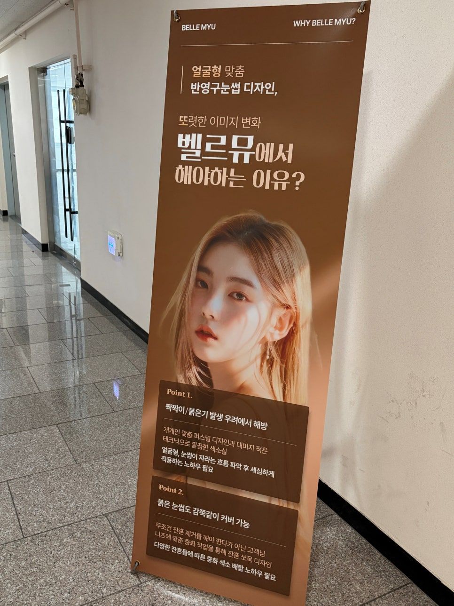
시술실은 따로 분리되어 있고 베드가 두 개예요. 눕자마자 마취크림 올리고 이십 분 정도 기다렸습니다. 이때가 제일 심심하고, 이후로는 따끔한 정도만 있었어요.
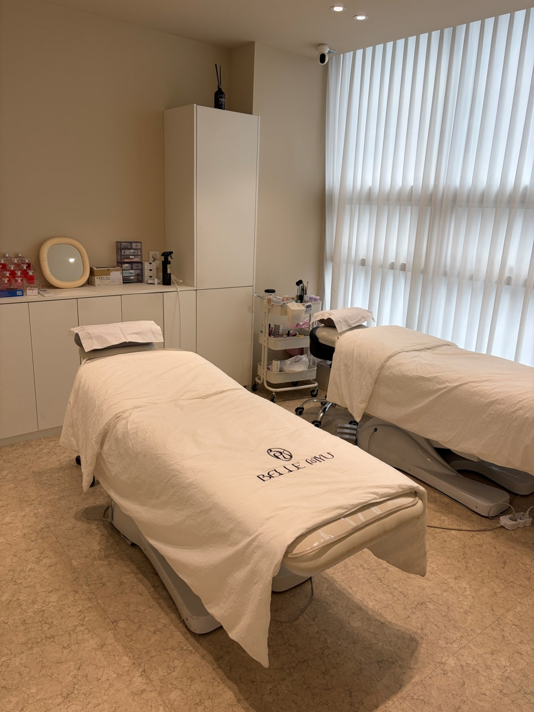
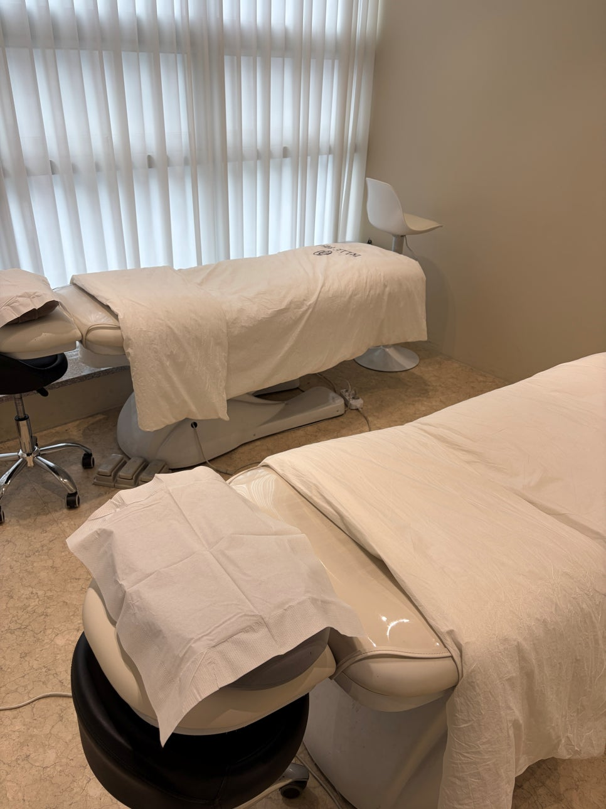
직후엔 색이 평소보다 또렷하게 보이는데, 선이 얇고 기존 눈썹 사이로 결이 들어가 있어서 부담스럽진 않았어요. 앞머리를 꽉 채우지 않은 게 제일 마음에 들었습니다.
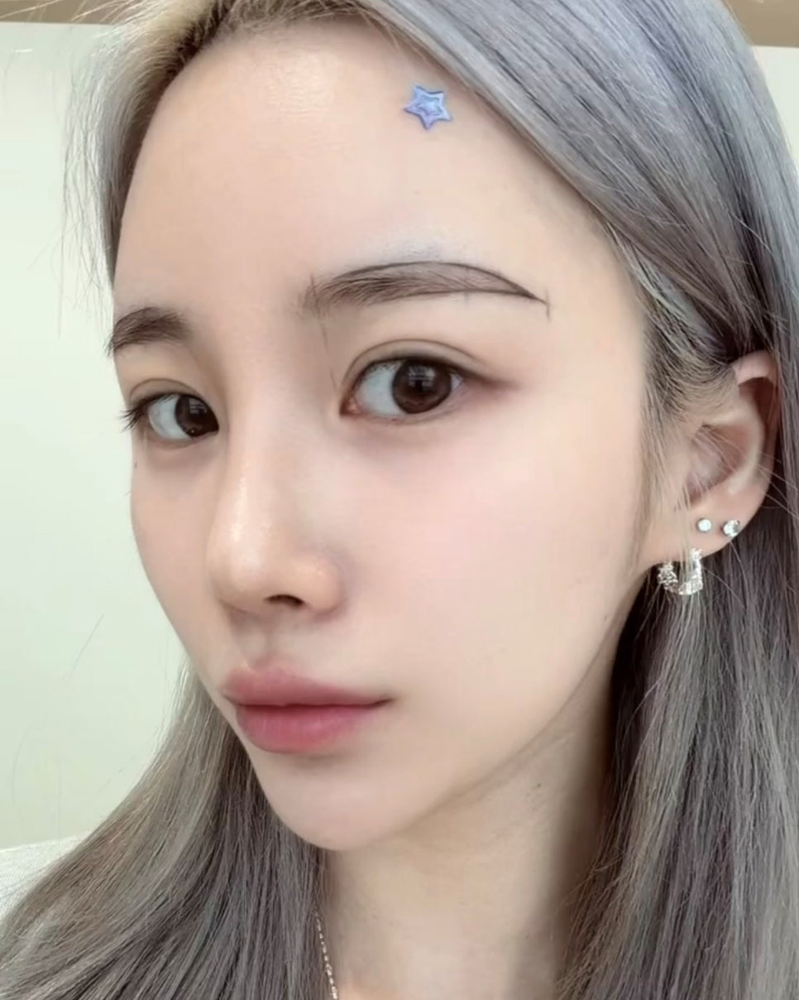
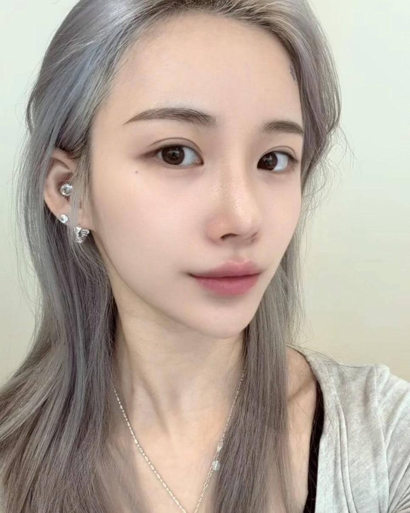
차 타고 나오면서 몇 번이나 거울로 봤습니다. 하루 지나면서 색이 조금 가라앉고, 일주일쯤 각질이 올라온 뒤에 훨씬 옅어졌어요.
눈썹 하러 갔는데 속눈썹 영양제랑 틴트도 있고, 안쪽엔 네일 자리도 따로 있어요. 다음엔 네일까지 같은 날에 예약하려고요.
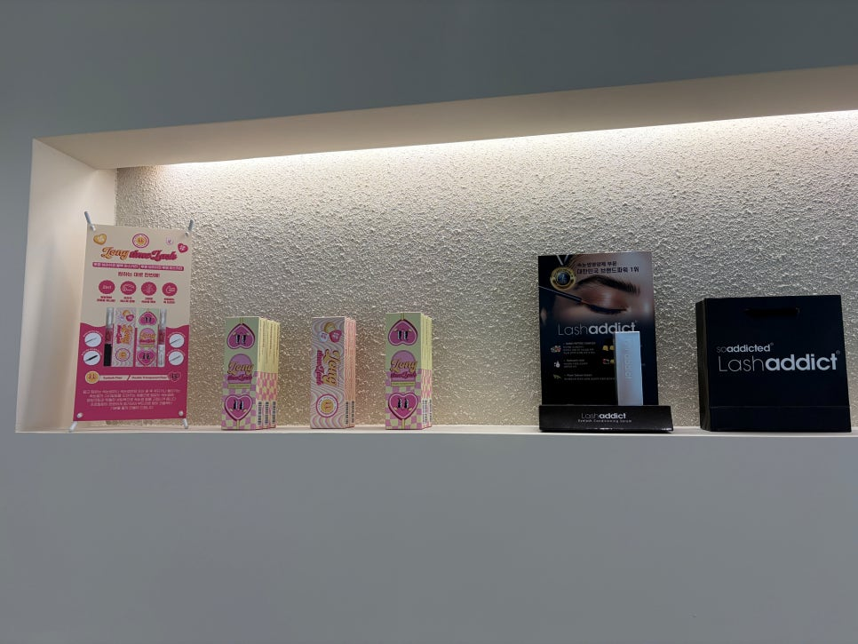
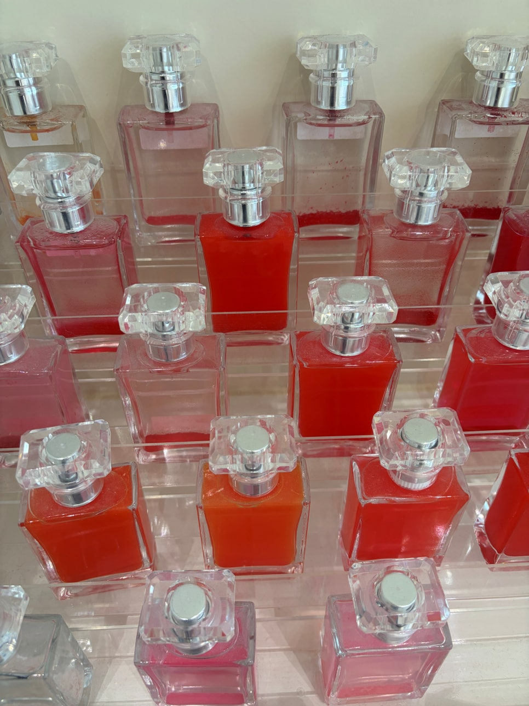
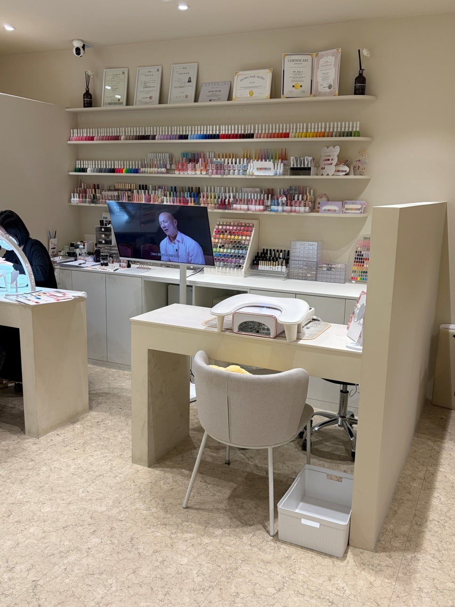
가격보다 실제 작업 사진을 먼저 봤어요. 앞머리 표현, 꼬리 라인, 좌우 균형. 그리고 상담에서 원하는 진하기를 끝까지 맞춰주는지가 제일 중요했습니다. 유지감은 피부 타입이랑 관리에 따라 개인차가 있으니 상담은 꼭 받아보시길요 :)
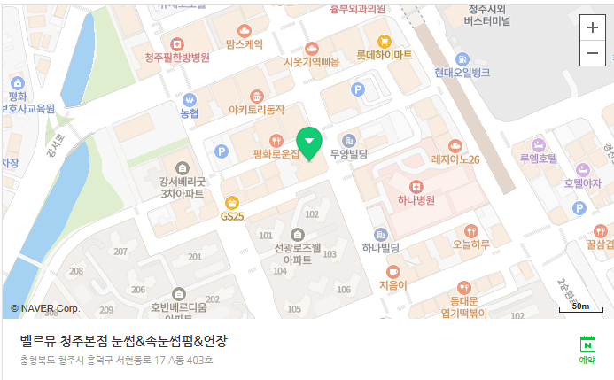